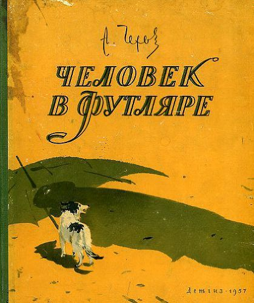

Человек в футляре
Полное многостраничное HTML-издание рассказа на 4 страницах, с закладками, заметками и тремя темами чтения. Работает автономно, без интернета.
«Людей, одиноких по натуре, которые, как рак-отшельник или улитка, стараются уйти в свою скорлупу, на этом свете не мало.»
А. П. Чехов. «Человек в футляре», часть первая

Ваши закладки и заметки
Оглавление (4 страницы)
В рассказе нет авторских глав: деление на четыре страницы условное и сделано только для удобства чтения. Текст: электронное издание на основе общедоступной версии. Чехов умер в 1904 году, и произведение находится в общественном достоянии.